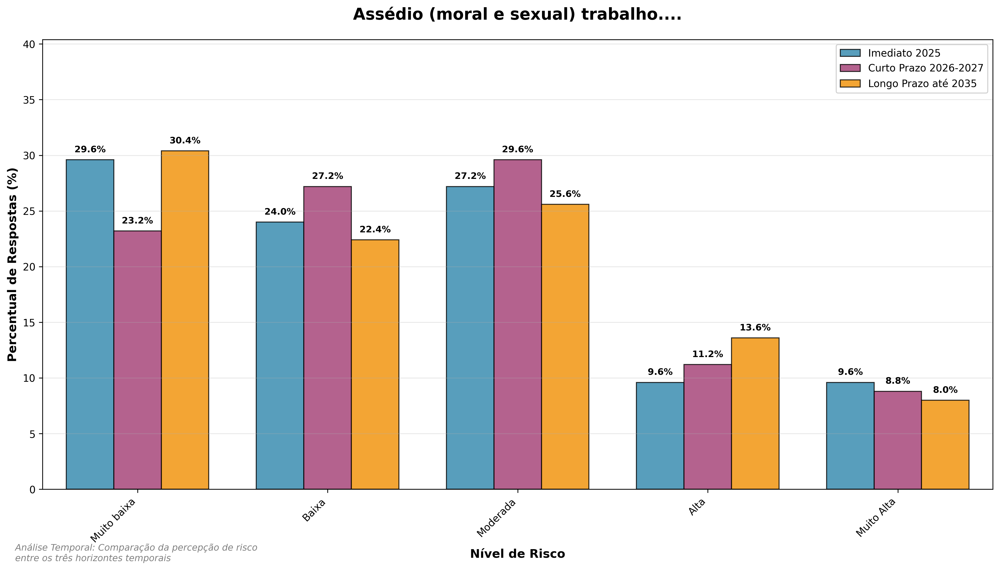

10 Dimensão Social
11 Dimensão Social
Este capítulo apresenta a análise dos riscos sociais com a evolução da percepção de risco ao longo do tempo.
11.1 Análise da Dimensão de Riscos Sociais no Setor Portuário

O gráfico apresenta o ranking dos riscos sociais no período Imediato 2025, ordenados pelo percentual de respostas em níveis altos (4-5). Os principais destaques são:
Riscos Mais Críticos (acima de 30%):
Acidentes nas operações portuárias (30,4%) - Maior risco social identificado
Insuficiência de serviços públicos essenciais (28,0%) - Segundo maior risco
Riscos Elevados (25-30%):
- Falhas na gestão de crises (26,4%)
- Falhas no controle interno: fraudes ou corrupção (26,4%)
- Ausência do Estado junto às populações próximas (26,4%)
- Falta de recursos humanos capacitados (27,2%)
Riscos Moderados (20-25%):
- Acidentes rodoviários e ferroviários (24,0%)
- Maior uso de tecnologias (23,2%)
- Ocorrência de pandemias ou epidemias (21,6%)
- Ameaças aos direitos humanos (20,8%)
Riscos Controlados (abaixo de 20%):
- Falta de participação social (16,8%)
- Desigualdades raciais/étnicas e de gênero (14,4%)
- Assédio moral e sexual no ambiente de trabalho (19,2%)
Análise Geral: A média geral de risco alto é de 23,4%, indicando um cenário de atenção moderada. Os riscos operacionais e de governança apresentam os maiores percentuais, enquanto questões relacionadas a diversidade e participação social mostram menores níveis de preocupação neste período.
11.2 Análise Temporal da Dimensão Social

A dimensão social compreende variáveis críticas, abrangendo desde direitos humanos até questões trabalhistas e participação comunitária. O slopegraph social revela como as percepções sobre impacto social evoluem, indicando áreas que demandam atenção contínua.
11.3 Análise Temporal dos Riscos Sociais
Esta seção apresenta a análise dos três horizontes temporais para a dimensão social, facilitando a comparação da evolução da percepção de risco ao longo do tempo. Cada gráfico mostra a distribuição percentual das respostas por nível de risco nos períodos Imediato 2025, Curto Prazo 2026-2027 e Longo Prazo até 2035.
11.3.1 Ameaças aos direitos humanos e/ou às liberdades individuais ou de grupo

Evolução da Percepção de Risco: - Tendência de crescimento: Aumento progressivo da percepção de risco ao longo do tempo - Mediana: Evolui de 2.0 (2025) para 3.0 (2035), indicando piora da situação
- Risco Alto (níveis 4-5): Cresce de 20.8% (2025) para 32.8% (2035) - aumento de 57.7%
- Risco Baixo (níveis 1-2): Redução de 58.4% (2025) para 40.0% (2035)
Contexto Detalhado por Período:
Período Imediato 2025: Devido às ameaças aos direitos humanos e às liberdades individuais ou de grupo, poderá acontecer o aumento de denúncias, pressão internacional e litígios coletivos por violações, o que poderá levar a sanções administrativas, desgastes reputacionais e necessidade de reparar danos impactando a integridade institucional e o compromisso com direitos humanos. No período imediato 2025, 20,8% das respostas permanecem nos níveis 4-5 e a mediana em 2 indica um nível controlado sob vigilância.
Período Curto Prazo 2026-2027: A mesma dinâmica de ameaças aos direitos humanos evolui para um nível emergente que merece acompanhamento próximo, com 26,4% das respostas nos níveis 4-5 e mediana em 2, indicando transição para risco moderado.
Período Longo Prazo até 2035: A situação se agrava significativamente, atingindo 32,8% de respostas nos níveis 4-5 com mediana em 3, configurando um nível elevado que demanda planos de ação priorizados.
Implicações Estratégicas: A tendência de deterioração sugere necessidade de planejamento estratégico robusto para proteção de direitos humanos no longo prazo, com investimentos crescentes em compliance e mecanismos de salvaguarda. A evolução de controlado para crítico indica urgência de medidas preventivas e corretivas escalonadas ao longo do tempo.
11.3.2 Ocorrência de pandemias ou epidemias de doenças de rápida disseminação

Evolução da Percepção de Risco:
- Tendência de crescimento acelerado: Aumento significativo da preocupação com saúde pública - Mediana: Evolui de 2.0 (2025) para 3.0 (2035)
- Risco Alto (níveis 4-5): Cresce de 21.6% (2025) para 37.6% (2035) - aumento de 74.1%
- Risco Baixo (níveis 1-2): Redução de 56.8% (2025) para 32.8% (2035)
Contexto Detalhado por Período:
Período Imediato 2025: Devido à ocorrência de pandemias ou epidemias de doenças de rápida disseminação, poderá acontecer novos surtos que provoquem ausências em massa e protocolos sanitários emergenciais, o que poderá levar a paralisações operacionais, atrasos logísticos e custos extraordinários de proteção impactando a continuidade dos serviços portuários e a saúde da força de trabalho. No período imediato 2025, 21,6% das respostas permanecem nos níveis 4-5 e a mediana em 2 indica um nível controlado sob vigilância.
Período Curto Prazo 2026-2027: A preocupação com pandemias evolui para um nível moderado com tendência de crescimento, atingindo 28,8% das respostas nos níveis 4-5 com mediana em 3, indicando transição para risco elevado.
Período Longo Prazo até 2035: A situação se torna crítica, com 37,6% das respostas nos níveis 4-5 e mediana em 3, configurando um nível elevado que demanda planos de ação priorizados.
Implicações Estratégicas: A crescente preocupação com pandemias indica necessidade de fortalecimento permanente de protocolos sanitários e planos de contingência para garantir resiliência operacional. A evolução de controlado para crítico reflete as lições aprendidas pós-COVID e a percepção de maior vulnerabilidade a eventos sanitários globais.
11.3.3 Insuficiência de serviços públicos essenciais

Evolução da Percepção de Risco:
- Tendência de deterioração crítica: Piora consistente ao longo do tempo
- Mediana: Mantém-se em 3.0 em todos os períodos, indicando persistência do problema
- Risco Alto (níveis 4-5): Cresce de 28.0% (2025) para 40.8% (2035) - aumento de 45.7%
- Risco Baixo (níveis 1-2): Redução de 36.0% (2025) para 24.0% (2035)
Contexto Detalhado por Período:
Período Imediato 2025: Devido à insuficiência de serviços públicos essenciais nas áreas adjacentes, poderá acontecer falhas persistentes em saneamento, saúde, transporte e segurança para trabalhadores e comunidades, o que poderá levar a aumento de vulnerabilidades sociais, absenteísmo e protestos comunitários impactando a estabilidade operacional e as relações com as comunidades do entorno. No período imediato 2025, 28,0% das respostas permanecem nos níveis 4-5 e a mediana em 3 indica um nível moderado com tendência de crescimento.
Período Curto Prazo 2026-2027: A situação evolui para um nível elevado, atingindo 33,6% das respostas nos níveis 4-5 com mediana em 3, configurando um patamar crítico que demanda planos de ação priorizados.
Período Longo Prazo até 2035: A insuficiência de serviços essenciais se torna crítica, com 40,8% das respostas nos níveis 4-5 e mediana em 3, indicando um patamar crítico que requer medidas imediatas.
Implicações Estratégicas: A insuficiência de serviços essenciais representa um risco crônico que exige parcerias público-privadas e investimentos estruturais para garantir sustentabilidade operacional. A persistência do problema em todos os períodos indica necessidade de soluções sistêmicas e colaborativas entre setor portuário e poder público.
11.3.4 Acidentes rodoviários e ferroviários de alta severidade

Evolução da Percepção de Risco:
- Tendência de crescimento moderado: Aumento gradual da preocupação
- Mediana: Evolui de 2.0 (2025) para 3.0 (2035)
- Risco Alto (níveis 4-5): Cresce de 24.0% (2025) para 33.6% (2035) - aumento de 40.0%
- Risco Baixo (níveis 1-2): Redução de 52.0% (2025) para 36.8% (2035)
Contexto Detalhado por Período:
Período Imediato 2025: Devido aos acidentes rodoviários e ferroviários de alta severidade próximos aos portos, poderá acontecer bloqueios de acesso, danos a cargas perigosas e sinistros ambientais de grande escala, o que poderá levar a rupturas na cadeia de suprimentos, multas ambientais e perdas financeiras impactando a continuidade logística e o cumprimento de SLAs estratégicos. No período imediato 2025, 24,0% das respostas permanecem nos níveis 4-5 e a mediana em 2 indica um nível controlado sob vigilância.
Período Curto Prazo 2026-2027: A preocupação com acidentes evolui para um nível moderado com tendência de crescimento, atingindo 28,8% das respostas nos níveis 4-5 com mediana em 3, indicando transição para risco elevado.
Período Longo Prazo até 2035: A situação se torna mais crítica, com 33,6% das respostas nos níveis 4-5 e mediana em 3, configurando um nível elevado que demanda planos de ação priorizados.
Implicações Estratégicas: A crescente preocupação com acidentes logísticos exige investimentos em segurança viária, sistemas de monitoramento e planos de resposta emergenciais integrados. A evolução de controlado para elevado indica necessidade de medidas preventivas escalonadas ao longo do tempo.
11.3.5 Acidentes nas operações portuárias

Evolução da Percepção de Risco:
- Tendência de elevação consistente: Preocupação crescente com segurança operacional
- Mediana: Mantém-se em 3.0 em todos os períodos, indicando risco persistente
- Risco Alto (níveis 4-5): Cresce de 30.4% (2025) para 34.4% (2035) - aumento de 13.2%
- Risco Baixo (níveis 1-2): Redução de 36.8% (2025) para 32.0% (2035)
Contexto Detalhado por Período:
Período Imediato 2025: Devido aos acidentes nas operações portuárias, poderá acontecer falhas em equipamentos, incidentes com trabalhadores e paradas de berço, o que poderá levar a interrupção das operações, indenizações e investigações regulatórias impactando a produtividade operacional e a segurança do trabalho. No período imediato 2025, 30,4% das respostas permanecem nos níveis 4-5 e a mediana em 3 indica um nível elevado que demanda planos de ação priorizados.
Período Curto Prazo 2026-2027: A preocupação com acidentes operacionais se mantém elevada, atingindo 33,6% das respostas nos níveis 4-5 com mediana em 3, configurando um patamar crítico que exige atenção contínua.
Período Longo Prazo até 2035: A situação persiste como crítica, com 34,4% das respostas nos níveis 4-5 e mediana em 3, indicando um risco elevado e persistente que requer investimentos contínuos.
Implicações Estratégicas: Acidentes operacionais representam um risco crítico e persistente que exige investimentos contínuos em treinamento, equipamentos e cultura de segurança. A persistência do risco em todos os períodos indica necessidade de melhorias sistêmicas e culturais na segurança operacional.
11.3.6 Falhas na gestão de crises e na resposta a emergências

Evolução da Percepção de Risco:
- Tendência de crescimento moderado: Aumento da preocupação com capacidade de resposta
- Mediana: Mantém-se em 3.0 em todos os períodos
- Risco Alto (níveis 4-5): Cresce de 26.4% (2025) para 31.2% (2035) - aumento de 18.2%
- Risco Baixo (níveis 1-2): Redução de 40.8% (2025) para 32.8% (2035)
Contexto Detalhado por Período:
Período Imediato 2025: Devido às falhas na gestão de crises e na resposta a emergências, poderá acontecer atrasos em planos de contingência e comunicações desencontradas durante incidentes, o que poderá levar a perda de tempo de resposta, ampliação de danos e responsabilizações legais impactando a resiliência institucional e a proteção de vidas e ativos. No período imediato 2025, 26,4% das respostas permanecem nos níveis 4-5 e a mediana em 3 indica um nível moderado com tendência de crescimento.
Período Curto Prazo 2026-2027: A preocupação com gestão de crises se mantém elevada, atingindo 28,0% das respostas nos níveis 4-5 com mediana em 3, configurando um patamar crítico que exige atenção contínua.
Período Longo Prazo até 2035: A situação se torna mais crítica, com 31,2% das respostas nos níveis 4-5 e mediana em 3, indicando um risco elevado e persistente que requer investimentos contínuos.
Implicações Estratégicas: A gestão de crises requer investimentos em planos de contingência, treinamento regular e sistemas de comunicação robustos para garantir resposta efetiva. A persistência do risco em todos os períodos indica necessidade de melhorias sistêmicas na capacidade de resposta emergencial.
11.3.7 Falhas no controle interno: fraudes ou corrupção

Evolução da Percepção de Risco:
- Tendência de crescimento significativo: Preocupação crescente com governança
- Mediana: Mantém-se em 3.0 em todos os períodos
- Risco Alto (níveis 4-5): Cresce de 26.4% (2025) para 34.4% (2035) - aumento de 30.3%
- Risco Baixo (níveis 1-2): Redução de 40.8% (2025) para 32.0% (2035)
Contexto Detalhado por Período:
Período Imediato 2025: Devido às falhas no controle interno, fraudes ou corrupção, poderá acontecer desvios de recursos, contratos irregulares e sanções dos órgãos de controle, o que poderá levar a multas, perda de confiança e restrições ao acesso a financiamentos impactando a governança corporativa e a sustentabilidade financeira. No período imediato 2025, 26,4% das respostas permanecem nos níveis 4-5 e a mediana em 3 indica um nível moderado com tendência de crescimento.
Período Curto Prazo 2026-2027: A preocupação com falhas no controle interno se mantém elevada, atingindo 29,6% das respostas nos níveis 4-5 com mediana em 3, configurando um patamar crítico que exige atenção contínua.
Período Longo Prazo até 2035: A situação se torna mais crítica, com 34,4% das respostas nos níveis 4-5 e mediana em 3, indicando um risco elevado e persistente que requer investimentos contínuos.
Implicações Estratégicas: Riscos de governança exigem fortalecimento de controles internos, auditorias regulares e cultura organizacional ética para mitigar fraudes e corrupção. A evolução de moderado para elevado indica necessidade de melhorias sistêmicas na transparência e compliance.
11.3.8 Falta de recursos humanos capacitados e especializados

Evolução da Percepção de Risco:
- Tendência de crescimento acentuado: Preocupação crescente com gap de competências
- Mediana: Mantém-se em 3.0 em todos os períodos
- Risco Alto (níveis 4-5): Cresce de 27.2% (2025) para 39.2% (2035) - aumento de 44.1%
- Risco Baixo (níveis 1-2): Redução de 36.8% (2025) para 28.0% (2035)
Contexto Detalhado por Período:
Período Imediato 2025: Devido à falta de recursos humanos capacitados e especializados no setor portuário, poderá acontecer lacunas de competências técnicas e dificuldades de preencher turnos estratégicos, o que poderá levar a queda de produtividade, atrasos operacionais e dependência de terceiros impactando a eficiência operacional e a preservação do conhecimento crítico. No período imediato 2025, 27,2% das respostas permanecem nos níveis 4-5 e a mediana em 3 indica um nível moderado com tendência de crescimento.
Período Curto Prazo 2026-2027: A preocupação com recursos humanos se intensifica, atingindo 35,2% das respostas nos níveis 4-5 com mediana em 3, configurando um nível elevado que demanda planos de ação priorizados.
Período Longo Prazo até 2035: A situação se torna crítica, com 39,2% das respostas nos níveis 4-5 e mediana em 3, indicando um risco elevado e persistente que requer investimentos contínuos.
Implicações Estratégicas: A escassez de talentos exige investimentos em programas de formação, parcerias educacionais e estratégias de retenção para garantir sustentabilidade operacional. A evolução de moderado para elevado indica necessidade de planejamento estratégico de longo prazo para desenvolvimento de competências.
11.3.9 Assédio (moral e sexual) no ambiente de trabalho

Evolução da Percepção de Risco:
- Tendência de crescimento moderado: Preocupação gradual com ambiente de trabalho
- Mediana: Mantém-se em 2.0 em todos os períodos - risco controlado
- Risco Alto (níveis 4-5): Cresce de 19.2% (2025) para 21.6% (2035) - aumento de 12.5%
- Risco Baixo (níveis 1-2): Mantém-se elevado em 64.0% (2025) para 60.8% (2035)
Contexto Detalhado por Período:
Período Imediato 2025: Devido ao assédio moral e sexual no ambiente de trabalho, poderá acontecer altos índices de denúncias, rotatividade e conflitos trabalhistas, o que poderá levar a ações judiciais, afastamentos e deterioração do clima organizacional impactando o bem-estar das equipes e a atratividade do ambiente de trabalho. No período imediato 2025, 19,2% das respostas permanecem nos níveis 4-5 e a mediana em 2 indica um nível controlado sob vigilância.
Período Curto Prazo 2026-2027: A preocupação com assédio se mantém controlada, atingindo 20,0% das respostas nos níveis 4-5 com mediana em 2, configurando um nível controlado sob vigilância.
Período Longo Prazo até 2035: A situação permanece controlada, com 21,6% das respostas nos níveis 4-5 e mediana em 2, indicando um risco controlado sob vigilância.
Implicações Estratégicas: Apesar do crescimento moderado, o assédio requer políticas preventivas robustas, canais de denúncia eficazes e cultura organizacional inclusiva. A manutenção do risco em nível controlado indica eficácia das medidas preventivas, mas exige vigilância contínua.
11.3.10 Desigualdades raciais/étnicas e de gênero

Evolução da Percepção de Risco:
- Tendência de crescimento leve: Preocupação crescente mas controlada
- Mediana: Mantém-se em 2.0 em todos os períodos - risco controlado
- Risco Alto (níveis 4-5): Cresce de 14.4% (2025) para 18.4% (2035) - aumento de 27.8%
- Risco Baixo (níveis 1-2): Mantém-se elevado em 68.0% (2025) para 64.8% (2035)
Contexto Detalhado por Período:
Período Imediato 2025: Devido às desigualdades raciais, étnicas e de gênero, poderá acontecer processos seletivos excludentes, desigualdade salarial e baixa representatividade, o que poderá levar a reputação negativa, sanções regulatórias e engajamento limitado impactando a agenda de diversidade, equidade e inclusão do setor. No período imediato 2025, 14,4% das respostas permanecem nos níveis 4-5 e a mediana em 2 indica um nível controlado sob vigilância.
Período Curto Prazo 2026-2027: A preocupação com desigualdades se mantém controlada, atingindo 17,6% das respostas nos níveis 4-5 com mediana em 2, configurando um nível controlado sob vigilância.
Período Longo Prazo até 2035: A situação permanece controlada, com 18,4% das respostas nos níveis 4-5 e mediana em 2, indicando um risco controlado sob vigilância.
Implicações Estratégicas: Desigualdades requerem programas de diversidade e inclusão, metas de representatividade e auditorias de equidade para promover ambiente mais justo. A manutenção do risco em nível controlado indica progresso nas políticas de inclusão, mas exige monitoramento contínuo.
11.3.11 Falta de participação social

Evolução da Percepção de Risco:
- Tendência de crescimento moderado: Preocupação gradual com engajamento - Mediana: Mantém-se em 2.0 em todos os períodos - risco controlado
- Risco Alto (níveis 4-5): Cresce de 16.8% (2025) para 19.2% (2035) - aumento de 14.3%
- Risco Baixo (níveis 1-2): Mantém-se elevado em 64.8% (2025) para 64.0% (2035)
Contexto Detalhado por Período:
Período Imediato 2025: Devido à falta de participação social, poderá acontecer redução de canais de diálogo e aumento de conflitos com comunidades, o que poderá levar a protestos, judicializações e atraso em obras ou licenças impactando a licença social para operar e a legitimidade perante stakeholders. No período imediato 2025, 16,8% das respostas permanecem nos níveis 4-5 e a mediana em 2 indica um nível controlado sob vigilância.
Período Curto Prazo 2026-2027: A preocupação com participação social se mantém controlada, atingindo 19,2% das respostas nos níveis 4-5 com mediana em 2, configurando um nível controlado sob vigilância.
Período Longo Prazo até 2035: A situação permanece controlada, com 19,2% das respostas nos níveis 4-5 e mediana em 2, indicando um risco controlado sob vigilância.
Implicações Estratégicas: Participação social exige canais de diálogo permanentes, consultas públicas e transparência para construir licença social e legitimidade. A manutenção do risco em nível controlado indica eficácia dos mecanismos de engajamento, mas requer fortalecimento contínuo.
11.3.12 Maior uso de tecnologias (IA, mecanização, robotização)

Evolução da Percepção de Risco:
- Tendência de crescimento exponencial: Preocupação crescente com transformação digital
- Mediana: Mantém-se em 3.0 em todos os períodos - risco elevado persistente
- Risco Alto (níveis 4-5): Cresce de 23.2% (2025) para 47.2% (2035) - aumento de 103.4%
- Risco Baixo (níveis 1-2): Redução de 36.8% (2025) para 20.0% (2035)
Contexto Detalhado por Período:
Período Imediato 2025: Devido ao maior uso de tecnologias como IA, mecanização e robotização, poderá acontecer erros de automação, obsolescência de processos e exposição a ciberataques, o que poderá levar a interrupções operacionais, custos adicionais e risco à competitividade impactando a modernização tecnológica segura e a produtividade dos terminais. No período imediato 2025, 23,2% das respostas permanecem nos níveis 4-5 e a mediana em 3 indica um nível moderado com tendência de crescimento.
Período Curto Prazo 2026-2027: A preocupação com tecnologias se intensifica, atingindo 35,2% das respostas nos níveis 4-5 com mediana em 3, configurando um nível elevado que demanda planos de ação priorizados.
Período Longo Prazo até 2035: A situação se torna crítica, com 47,2% das respostas nos níveis 4-5 e mediana em 3, indicando um patamar crítico que requer medidas imediatas.
Implicações Estratégicas: A transformação tecnológica representa o risco de maior crescimento, exigindo investimentos em cibersegurança, treinamento digital e governança de IA para mitigar riscos. A evolução de moderado para crítico indica necessidade de planejamento estratégico robusto para transição digital segura.
11.3.13 Ausência do Estado junto às populações próximas aos portos

Evolução da Percepção de Risco:
- Tendência de crescimento significativo: Preocupação crescente com vácuo institucional
- Mediana: Mantém-se em 3.0 em todos os períodos
- Risco Alto (níveis 4-5): Cresce de 26.4% (2025) para 36.8% (2035) - aumento de 39.4%
- Risco Baixo (níveis 1-2): Redução de 40.0% (2025) para 32.0% (2035)
Contexto Detalhado por Período:
Período Imediato 2025: Devido à ausência do Estado junto às populações próximas aos portos, poderá acontecer vazios de políticas públicas e carência de serviços básicos para as comunidades portuárias, o que poderá levar a pressão social, aumento de vulnerabilidades e escalada de conflitos impactando a harmonia comunitária e a continuidade das operações. No período imediato 2025, 26,4% das respostas permanecem nos níveis 4-5 e a mediana em 3 indica um nível moderado com tendência de crescimento.
Período Curto Prazo 2026-2027: A preocupação com ausência estatal se intensifica, atingindo 31,2% das respostas nos níveis 4-5 com mediana em 3, configurando um nível elevado que demanda planos de ação priorizados.
Período Longo Prazo até 2035: A situação se torna mais crítica, com 36,8% das respostas nos níveis 4-5 e mediana em 3, indicando um risco elevado e persistente que requer investimentos contínuos.
Implicações Estratégicas: A ausência estatal exige parcerias público-privadas, investimentos sociais e advocacy para garantir desenvolvimento sustentável das comunidades portuárias. A evolução de moderado para elevado indica necessidade de planejamento estratégico para compensar vácuos institucionais.
11.4 Síntese da Análise Temporal
Riscos com Maior Crescimento (2025-2035):
1. Tecnologias (IA, robotização): +103.4% no risco alto
2. Pandemias: +74.1% no risco alto
- Direitos humanos: +57.7% no risco alto
4. Serviços essenciais: +45.7% no risco alto
5. Recursos humanos: +44.1% no risco alto
Riscos Mais Críticos em 2035:
1. Tecnologias: 47.2% em risco alto
2. Serviços essenciais: 40.8% em risco alto
3. Pandemias: 37.6% em risco alto
4. Recursos humanos: 39.2% em risco alto
5. Ausência do Estado: 36.8% em risco alto
Riscos Controlados:
- Desigualdades: 18.4% em risco alto (menor crescimento)
- Participação social: 19.2% em risco alto
- Assédio: 21.6% em risco alto
Recomendações Estratégicas: Priorizar investimentos em capacitação tecnológica, resiliência sanitária, serviços essenciais e desenvolvimento de talentos para mitigar os riscos de maior crescimento e impacto.